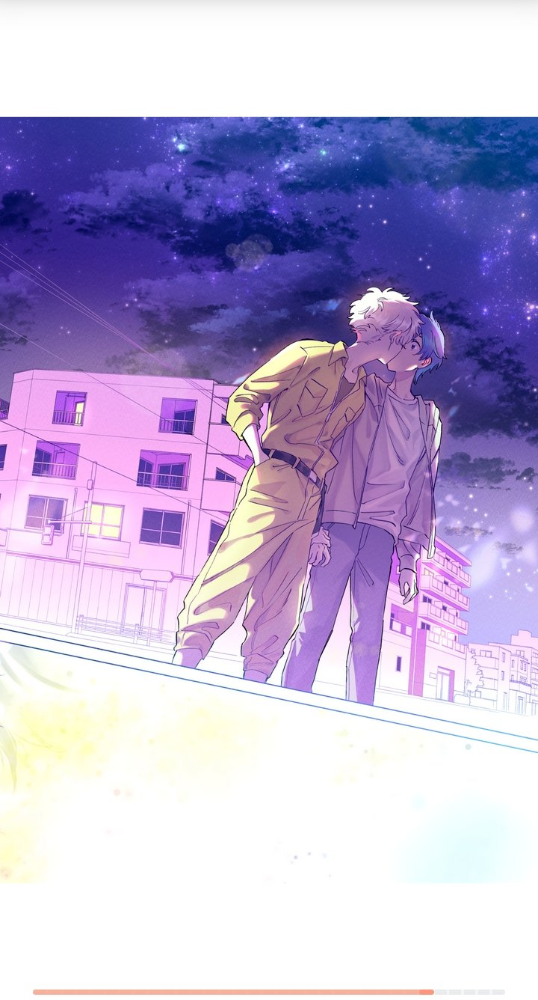
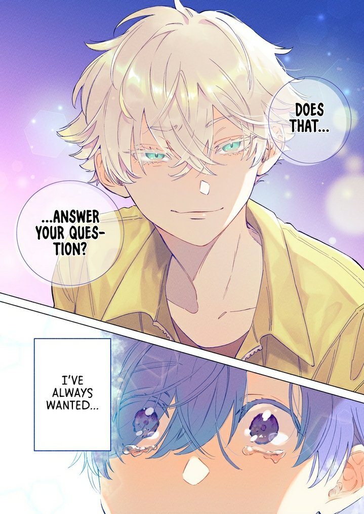

reading log

current
- chainsaw man -- (ongoing)
fujimoto going to hell bro. but anyways.
.jpg)
.jpg)
.jpg)
.jpg)
.jpg)
.jpg)
.jpg)
.jpg)
.jpg)
- the guy she was interested in wasn't a guy at all -- (ongoing)
very cute and fun manga to look at though it sure is dragging a lot... but you know what i'll let it slide. green yuri forever.
.jpg)
.jpg)
.jpg)
.jpg)
.jpg)
.jpg)
.jpg)
- company and private life -- (ongoing)
shelved
- my cat is such a weirdo -- volume 1/3
- bloodborne -- 13 / ???
finished
- villain
idk man that was beautiful.


- mob psycho 100
- blue
- look back
- goodbye, eri
- our dreams at dusk
.jpg)
.jpg)
- the little prince
- paper girls
- the girl from the sea
- uzumaki
- remina
- my lesbian experience with loneliness
- homestuck
a very formative piece of media... if you know you know.
want to read
- dorohedoro
- one piece
- your name / tamen de gushi
- land of the lustrous
- witch hat atelier
- run away with me girl
- double
- futaribeya
- my androgynous boyfriend
- seishun no hekireki
- love me for who i am
- sweet blue flowers
- puppy love
- nights with a cat
- ogi's summer break